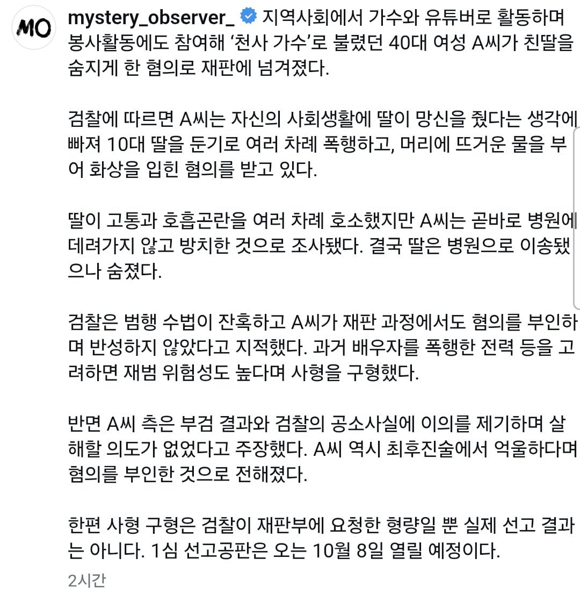

가수 겸 유튜버 김수진 사형 구형
댓글
저런사람도 대가리 깨져서 빨아주는 사람이 있겠지?
진주에는 왜케 또라이가 많은거냐..
싸잡기를 안하면 어디 마비라도 옴?
그렇게 치면 서울에서 못산다
이게 대체 뭔 소리냐 애가 무슨 짓을 했길래
이것도 사이비 같던데
헐 꽤 지난 사건이네
가수라기엔 노래도 못부름
지방행사가보면 ㄹㅇ 잘부르는 일반인보다 못부르는 가수 준내 많더라 ㅋㅋㅋㅋㅋ
그알에서 봤는데 진짜 너무 충격적이였음;;
저번 기사 떴을 때는 트롯 가수 모씨였는데, 아예 이름 떠버렸네
웬일이래, 이번엔 보지스카운트 없나?
뭔일이있었길래 저렇게까지하지
왜 낳은거냐
계곡이 생각남
글자를 읽는데
정신이 아득해진다